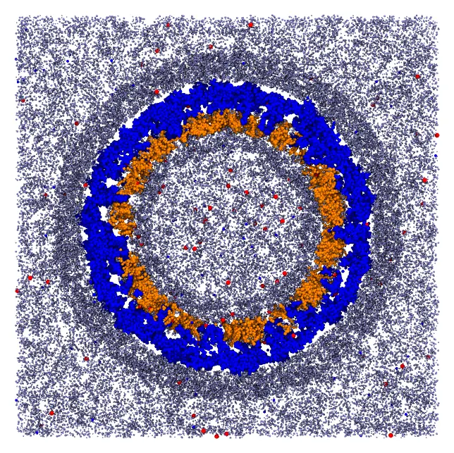
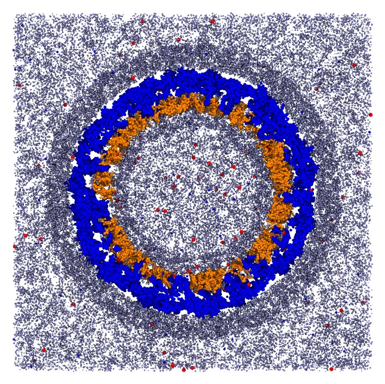

Zika virion (a large system)
A complete virion of the Zika virus, in a coarse-grained model (SIRAH): the protein shell of the virion, fixed, with a membrane of two layers of lipids (POPC, POPE and POPS) beneath it, solvated by water and ions inside the membrane, between the membrane and the proteins, and outside. The system has 2.77 million particles and 549 thousand molecules, in a box with sides of 674 Å, and packs in about half an hour to an hour.

A slab through the center of the virion: the protein shell (blue), the two layers of the membrane (orange), water (gray) and ions (red and blue).
The files are the packmol_zika set of MolSimTestFiles: download and extract packmol_zika.tar.gz (7 MB), which contains the input file zika.inp and the structures: capsid.pdb (the protein shell, 489960 particles), popc.pdb, pope.pdb and pops.pdb (the lipids), wt4.pdb and wls.pdb (two models of water of SIRAH), and NaW.pdb and ClW.pdb (the ions).
The regions of the system
Everything is organized in spherical shells around the center of the protein shell, which is fixed at the origin. The proteins occupy the region between about 150 and 250 Å from the center, mostly between 177 and 230 Å, with transmembrane segments crossing the membrane:
| Component | Region (distance from the center, Å) |
|---|---|
| Inner layer of the membrane | heads (bead 1) below 160, ends of the chains above 170 |
| Outer layer of the membrane | ends of the chains below 175, heads above 180 |
| Water inside the membrane | WT4 between 120 and 160, WLS below 150 |
| Water between the membrane and the proteins | WT4 between 175 and 195 |
| Water outside | WT4 between 230 and 280, WLS outside 230, in the box |
| Ions | inside 180, between 180 and 215, and outside 220 |
The lipids are oriented only by their extreme beads: the head (bead 1) and the end of a chain (bead 16, or 17 in POPS), which are 21 to 25 Å apart. The surfaces that bound them are 10 Å apart in the inner layer and 5 Å apart in the outer one, less than half the length of the lipids, which leaves them room to bend and tilt while being packed.
Command line
The input file (zika.inp), with the first structures of each kind (the complete file is in the tarball):
tolerance 2.0
output zika.pdb
structure capsid.pdb
number 1
center
fixed 0. 0. 0. 0. 0. 0.
end structure
#
# Outer layer of the membrane: heads (bead 1) outside r = 180 Å, ends of the
# chains (bead 16, or 17 in POPS) inside r = 175 Å
#
structure popc.pdb
number 2185
atoms 16
inside sphere 0. 0. 0. 175.
end atoms
atoms 1
outside sphere 0. 0. 0. 180.
end atoms
end structure
# ... POPE and POPS in the outer layer
#
# Inner layer of the membrane: heads inside r = 160 Å, ends of the chains
# outside r = 170 Å
#
structure popc.pdb
number 2855
atoms 16
outside sphere 0. 0. 0. 170.
end atoms
atoms 1
inside sphere 0. 0. 0. 160.
end atoms
end structure
# ... POPE and POPS in the inner layer
#
# Water inside the membrane: around and within the capsid
#
structure wt4.pdb
number 17903
inside sphere 0. 0. 0. 160.
outside sphere 0. 0. 0. 120.
end structure
structure wls.pdb
number 23500
inside sphere 0. 0. 0. 150.
end structure
# ... water between the membrane and the proteins, and outside
structure wls.pdb
number 400000
inside box -337. -337. -337. 337. 337. 337.
outside sphere 0. 0. 0. 230.
end structure
# ... ionsCheck the initial approximation first
For a system of this size, checking the initial approximation is essential: the packing takes half an hour, but the initial approximation takes about 10 seconds. Add the check keyword to the input file, and run it:
packmol zika.inpThe initial approximation is written to the output file (zika.pdb). A slab through its center shows that every component is in its region:

The initial approximation: the molecules are in their regions, but may overlap.
Only then remove check, and run the packing.
Packing
packmol zika.inpThe packing converged in 39 loops, which took 58 minutes with 14 threads, and about half an hour with 32 threads, using 3.7 GB of memory (the initial approximation alone uses about 2.3 GB). By default, the packmol executable uses all the cores of the machine; packmol -t N limits it to N threads.
- Check the initial approximation first (
check): mistakes in the constraints of a system of this size are expensive to find after the packing. restart_towrites the coordinates of a structure (or of the whole system) at the end of the packing, andrestart_fromreads them back, to pack the system in parts: for example, the membrane first, and then the solvent around it (see Restarting a run).- The memory and the time grow roughly linearly with the number of particles.
Julia
The same system, built in Julia, with the regions of the lipids given once for each layer:
using Packmolcapsid = structure_type("capsid.pdb"; number = 1, fixed = ([0., 0., 0.], [0., 0., 0.]), center = :geometric,)# The lipids of a layer: head (bead 1) and end of the chain (bead 16, or 17 in POPS)function layer(file, number, tail, head_region, tail_region) structure_type(file; number, atom_constraints = [[1] => head_region, [tail] => tail_region])endorigin = [0., 0., 0.]outer = (OutsideSphere(origin, 180.), InsideSphere(origin, 175.))inner = (InsideSphere(origin, 160.), OutsideSphere(origin, 170.))lipids = [ layer("popc.pdb", 2185, 16, outer...), layer("pope.pdb", 1079, 16, outer...), layer("pops.pdb", 367, 17, outer...), layer("popc.pdb", 2855, 16, inner...), layer("pope.pdb", 1441, 16, inner...), layer("pops.pdb", 473, 17, inner...),]box = InsideBox([-337., -337., -337.], [337., 337., 337.])solvent = [ structure_type("wt4.pdb"; number = 17903, constraints = [InsideSphere(origin, 160.), OutsideSphere(origin, 120.)]), structure_type("wls.pdb"; number = 23500, constraints = [InsideSphere(origin, 150.)]), structure_type("wt4.pdb"; number = 7551, constraints = [OutsideSphere(origin, 175.), InsideSphere(origin, 195.)]), structure_type("wt4.pdb"; number = 85127, constraints = [OutsideSphere(origin, 230.), InsideSphere(origin, 280.)]), structure_type("wls.pdb"; number = 400000, constraints = [box, OutsideSphere(origin, 230.)]),]ions = [ structure_type(ion; number, constraints) for (ion, numbers) in (("NaW.pdb", (616, 256, 2908)), ("ClW.pdb", (531, 167, 2422))) for (number, constraints) in zip(numbers, ( [InsideSphere(origin, 180.)], [OutsideSphere(origin, 180.), InsideSphere(origin, 215.)], [OutsideSphere(origin, 220.), box], ))]system = PackmolSystem([capsid; lipids; solvent; ions]; output = "zika.pdb", tolerance = 2.0, check = true, # the initial approximation only; remove to pack)packmol(system)